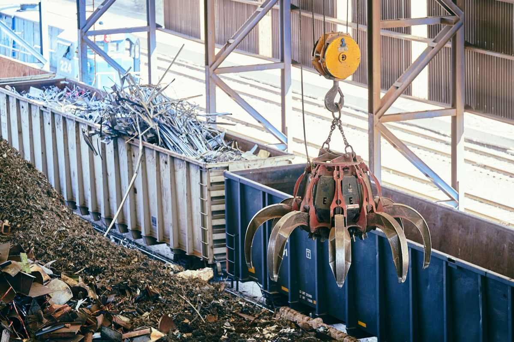

A load does not go straight from your driveway to a landfill. It gets sorted. Usable furniture and appliances go to local donation partners, metal and cardboard go to recyclers, electronics go to an e-waste stream, and what is genuinely finished goes to a permitted disposal site. The goal on every load is keeping more than half of it out of the ground.
People ask about this more than you would think, usually while a crew is carrying a perfectly good dresser out the door. It is a fair question, so here is the honest version rather than the brochure version.
The load gets sorted before it is ever dumped
Sorting starts at your house. When something usable comes out of a garage, it does not get thrown on top of a broken toilet. It gets set aside and loaded separately, because once a couch has a bag of wet trash on it, the couch is trash too.
Three questions decide where an item goes, in this order.
- Can somebody use this as it is? If yes, it goes to a donation route.
- Is it made of something a recycler wants? Metal, cardboard, and electronics have real destinations.
- Is it actually finished? Then it goes to a proper disposal site and nowhere else.
Nothing gets left at a curb, dropped in a dumpster that belongs to someone else, or quietly stacked behind a building. That is worth saying plainly, because it happens in this industry.
What gets donated
Furniture and appliances that still work go to local donation partners. We do not name a single partner here on purpose, because the right destination depends on what the item is and who has capacity that week, and naming one would be a promise we cannot keep on every load.
If you have the time and the item is genuinely nice, you have good options yourself before you ever call us. A Habitat for Humanity ReStore takes furniture, appliances, cabinets, and building materials, with each store setting its own accepted list. We would rather tell you that and lose the small job than take money you did not have to spend. Where to donate furniture in DFW walks through the local routes in more detail.
What does not get donated is anything broken, soaked, stained through, or missing the parts that make it work. Handing a nonprofit something they then have to pay to throw away just moves your disposal bill onto a charity.
What gets recycled
Metal is the easiest one. Appliances, bed frames, filing cabinets, exercise equipment, fencing, and anything else largely steel or aluminum goes to a scrap recycler. Cardboard goes to a paper stream. The EPA keeps a plain overview of how these streams work at recycling basics, and Texas keeps its own guidance at TCEQ.
Electronics are their own category and they matter more than most people realize. Televisions, monitors, printers, and computers contain materials that should not go into general trash, and the EPA covers the reasoning and the options at electronics donation and recycling. We handle them as e-waste rather than mixing them into a load. Appliance and electronics disposal in North Texas covers the refrigerant and screen rules in detail, and appliance removal covers the pickup itself.
Ask any hauler where the load goes. A company that cannot answer that question in one sentence is telling you something. There is no trick answer here, and you are allowed to ask before you book.
What actually reaches the landfill
Some of it does, and pretending otherwise would be dishonest.
Mattresses with no local recycler, broken particle-board furniture, carpet and pad, insulation, treated lumber, and general household waste mostly reach a disposal site. Building leftovers are a mixed bag. Clean wood, metal, and concrete have recycling routes and the EPA covers them at building materials, while mixed remodel debris usually does not.
Our stated goal is diverting more than half of every load. That is a goal we work at, not a certificate we hold, and we will not dress it up as anything more than that. We are haulers, not a recycling facility, and we will not pretend otherwise.
What we will not haul at all
Paint, solvents, motor oil, gasoline, pool chemicals, pesticides, propane tanks, and anything containing asbestos are household hazardous waste. We do not take them, no crew should take them in a trailer, and there is a free program for them where you live. The EPA explains the category at household hazardous waste. Plano residents use household chemical collection. McKinney runs household hazardous waste and e-waste collection, which has to be requested before noon the business day before your collection day and can be scheduled up to two weeks out. Every city around them has an equivalent.
If you are not sure which pile something belongs in, what we will and will not take is the full list.
Why this changes how a job is worth doing
Sorting a load properly takes longer than not sorting it. It means a separate stop for metal, another for electronics, and a drive to a donation site with a chair that could have gone in the pile. We do it anyway, for two plain reasons.
The first is that a lot of what comes out of a garage is not garbage. It is a working washer, a dining set the kids outgrew, or a filing cabinet that will outlive all of us. The second is the question we use on every job: would we do this at our own family's house.
You get one practical thing out of it. If you ever want to know where a specific item went, you can ask, and there will be a real answer.
We run pickups seven days a week across Plano, Allen, Frisco, McKinney, Richardson, Little Elm, Prosper, The Colony, Wylie, and Fairview. Call before noon and same afternoon is typical, though we say typical rather than guaranteed, because access and job size are real variables. The same sorting applies to appliances. A refrigerator picked up in Plano goes to a metal recycler once it is past use. So does an old dishwasher or dryer from McKinney, or whatever has been sitting in a Prosper garage. Tell us what you have and we will give you a free quote before anything is loaded.
Frequently asked questions
Do you actually donate things, or is that just marketing?
We actually do it. Usable furniture and appliances go to local donation partners rather than into a landfill load. We do not name one partner on the site, because the right destination depends on the item and on who has room that week.
Can you tell me where my specific item went?
Ask the crew on the day, or ask us afterward. If it was a large or sentimental item, we can usually tell you which route it took.
What happens to my old refrigerator?
Appliances go to a metal recycler, and units with refrigerant have to be handled under separate rules before the metal is processed. The appliance and electronics page covers that in full.
Will you take the paint cans in my garage?
No. Paint, solvents, and chemicals are household hazardous waste and go to your city's collection program, which is free for residents. We will point you at the right one for your address.
Do you sort at my house or somewhere else?
Both. Usable items get loaded separately at your house so they do not get ruined by the rest of the load, and the final sort happens after we leave.
If you are cleaning out a garage or a whole house and you want to know where it all ends up, ask us before you book. The full list of what we handle is on the services page, and there is no rush on our end.